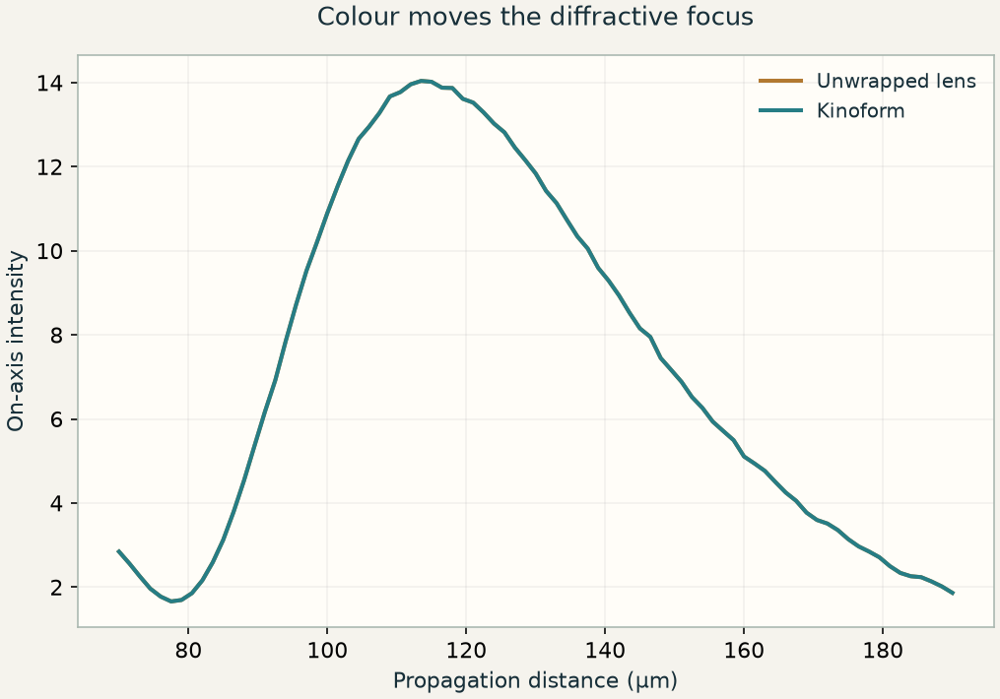

E06 / AN INTERACTIVE OPTICS LESSON
Remove full turns.
Keep the focus.
A thin element controls phase through height. Wrapping that phase makes a shallow optic, while quantization and colour reveal the price of the simplification.

E06 / THE FIVE-MINUTE FILM
Flat optics and wrapped phase
Watch the story, then use the experiment below to test the ideas yourself.
5:15 · E06 · Flat optics and wrapped phaseWatch on YouTube ↗
What to notice first.
A transparent material slows the phase of a wave relative to the surrounding medium. In the thin-element approximation, each transverse location supplies a local multiplier. For glass of refractive index n in air, a height h gives a phase delay φ = (2π/λ₀)(n − 1)h. This model ignores light coupling sideways while it passes through the structure.
A lens makes different parts of an incoming wave arrive in phase near a focus. A paraxial lens has a quadratic phase profile. Adding or subtracting an integer multiple of 2π at any location leaves its complex multiplier unchanged. Cutting away full-height phase turns therefore creates a wrapped lens, or kinoform, with a much smaller maximum height.
The demonstration uses a 1D lens cross-section in nondispersive glass with n = 1.5. Its design wavelength is 550 nm, so one full turn corresponds to 1.10 μm of glass. The unwrapped and continuous wrapped profiles produce the same field at that wavelength under the stated thin-element model. Their geometrical shapes are different, but their complex transmissions are equal.
That equivalence concerns a specified wavelength and model. It does not say that two fabricated structures scatter identically under Maxwell’s equations, nor that they remain equivalent across a broad spectrum.
By the end, you can
- Convert physical height into a phase delay.
- Explain why phase wrapping is equivalent at one design wavelength.
- Quantify staircase efficiency and identify when the thin-element model fails.
PREDICT BEFORE YOU CHANGE A CONTROL
A glass profile delays light by exactly one full phase turn at 550 nm. If you remove that height, will the device remain equivalent at 450 nm?
02 / TEST YOUR PREDICTION
Change one thing.
Follow what changes.
All plotted fields and curves are calculated from the stated model. Keep the other controls fixed while testing a prediction.
Model: 1D scalar thin-element lens, fixed n = 1.5, design λ₀ = 550 nm, aperture radius 15 μm and paraxial focal length 120 μm. Propagation uses exact scalar ASM. Fresnel reflection, material dispersion, polarization, and sidewall coupling are omitted.
- At 550 nm, compare the unwrapped and continuous wrapped focal profiles using the same incident-intensity scale.
- Keep wavelength fixed and reduce the number of phase levels. Inspect how energy leaves the intended focal order.
- Restore a continuous wrapped surface and change wavelength. Compare the axial focus curves of the two physical profiles, then move the observation plane to the new peak.
A staircase is an approximation to a rotation.
Fabrication often offers a finite set of heights. An N-level staircase approximates a smooth phase ramp with N constant phases. Contributions intended to add in one diffraction order are then slightly misaligned. Some power goes to other orders even if the element itself has no absorption.
This expression is the scalar first-order efficiency of an ideal, uniformly quantized, full-2π blazed phase grating at its design wavelength. It gives about 41%, 81%, 95%, and 99% for 2, 4, 8, and 16 levels. It is a useful reference for local kinoform zones, not a complete prediction of a finite lens’s throughput, fabrication loss, or focal encircled energy.
Colour changes the meaning of a removed turn.
A removed thickness h₂π at λ₀ produces a phase of 2πλ₀/λ at another wavelength if n is constant. That is generally not an integer turn. The wrapped surface therefore changes its interference pattern with colour. In the paraxial design order, its focus follows approximately f(λ) = f₀λ₀/λ. Longer wavelengths focus closer to the element in this model.
The unwrapped profile here uses a constant refractive index, so its geometrical focusing power is nearly wavelength-independent; diffraction spot size still changes. Real glass is dispersive. The notebook keeps this distinction explicit so that material dispersion is not confused with the stronger wavelength dependence caused by phase wrapping.
When local phase is insufficient.
The thin-element approximation treats columns independently. Steep sidewalls, wavelength-scale features, reflection, polarization dependence, and resonances can transfer energy between columns. Sampling the local-phase mask more finely cannot repair missing physics. E07 and E09 introduce models that can represent coupling and full-wave scattering.
The optional notebook experiment smooths a fabricated height profile before computing its phase. This is different from smoothing the final intensity image: fabrication changes the optical field before interference. All efficiency comparisons use the same incident normalization, avoiding an apparent improvement caused by rescaling each result to its own peak.
04 / CHECK YOUR UNDERSTANDING
Make a prediction before checking the explanation.
Can you explain the change?
Your own computational experiment.
The standalone notebook builds the model in small steps, draws the results, and checks the calculation against independent predictions. It runs on CPU using NumPy, SciPy, and Matplotlib. No repository clone, GPU, or external dataset is needed.
A short lab report
- Verify wrapping. Compare complex transmissions of continuous and wrapped profiles at two wavelengths.
- Measure order efficiency. Compute the +1 Fourier coefficient of 2-, 4-, 8-, and 16-level phase ramps.
- Separate error sources. Compare quantization, height smoothing, and pixel refinement.
Compare your reasoning
Verify wrapping
They agree at λ₀ up to floating-point error. At another wavelength the removed height need not be a full phase turn.
Measure order efficiency
Use a common unit-amplitude input and compare squared coefficient magnitude with sinc²(1/N).
Separate error sources
Quantization and smoothing alter the modeled device; pixel refinement changes its numerical representation. Full-wave model error is a separate issue.
Optional deeper extension
Measure blazed-grating order efficiency, vary wavelength, and smooth a fabricated height profile before propagation. Separate fabrication approximation, sampling error, and model error.
The notebook marks the extension clearly. Complete the core experiment and its checks first.
Instructor notes and assessment rubric ↗ · Model, setup, and reproducibility ↗
Know what the model leaves out.
1D scalar thin-element lens, fixed n = 1.5, design λ₀ = 550 nm, aperture radius 15 μm and paraxial focal length 120 μm. Propagation uses exact scalar ASM. Fresnel reflection, material dispersion, polarization, and sidewall coupling are omitted.
Video companion: watch the E06 film above (5:15).